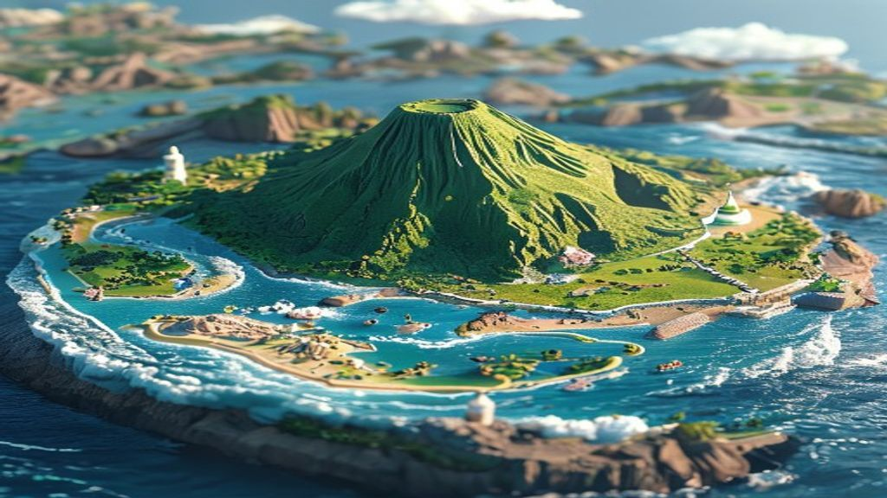
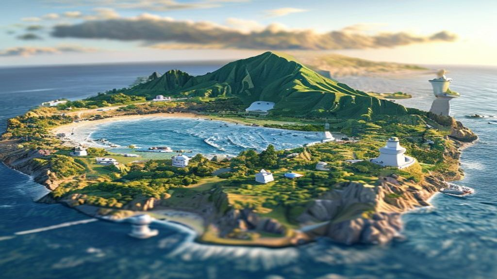
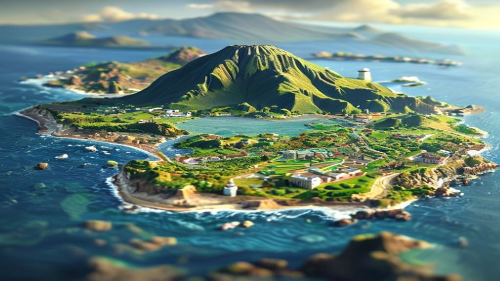
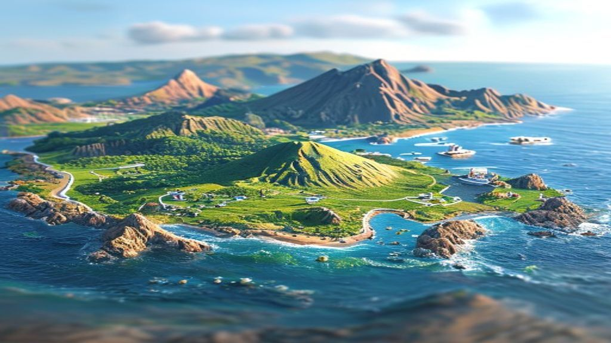
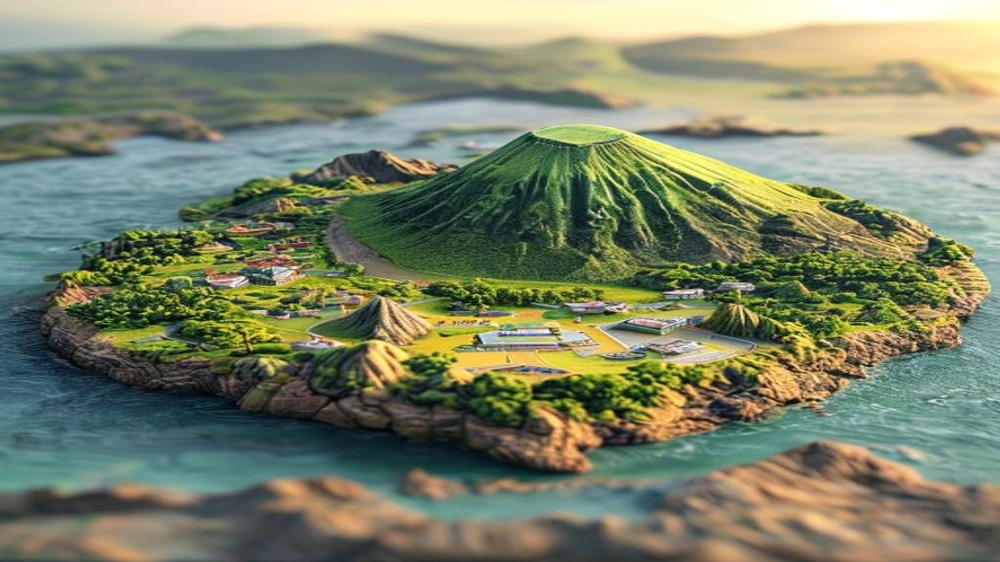
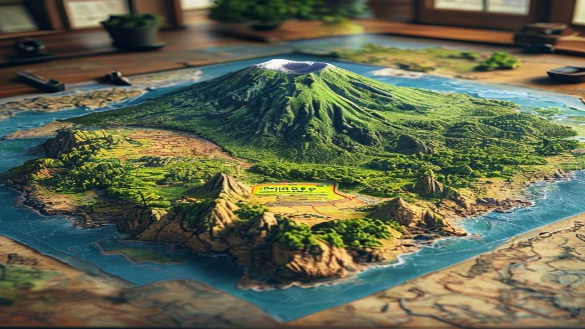
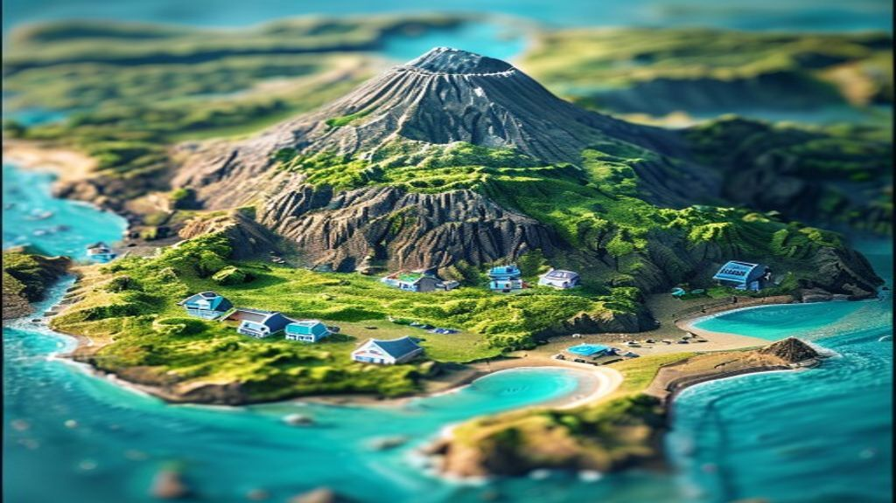
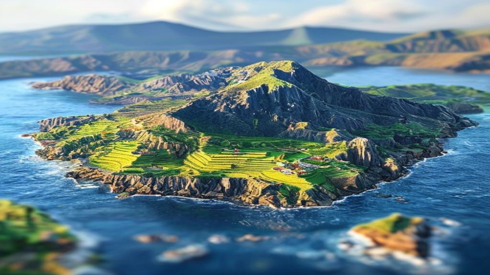

회장님 지시(A의 한라산 + D의 바다·해안 디테일 + 해변·등대·항구·공항)로 다시 만든 4종입니다.
"2번이 좋아" 처럼 알려주시면 인트로 첫 화면으로 넣고 솟아오르는 연출을 입힙니다. ("2번인데 더 따뜻하게" 같은 수정도 OK)








이미지: Pollinations.ai (무료 생성) · 실제 제주 윤곽과는 다른 AI 해석입니다 — 원하시면 실제 모양에 더 맞춰 다시 만들 수 있습니다.